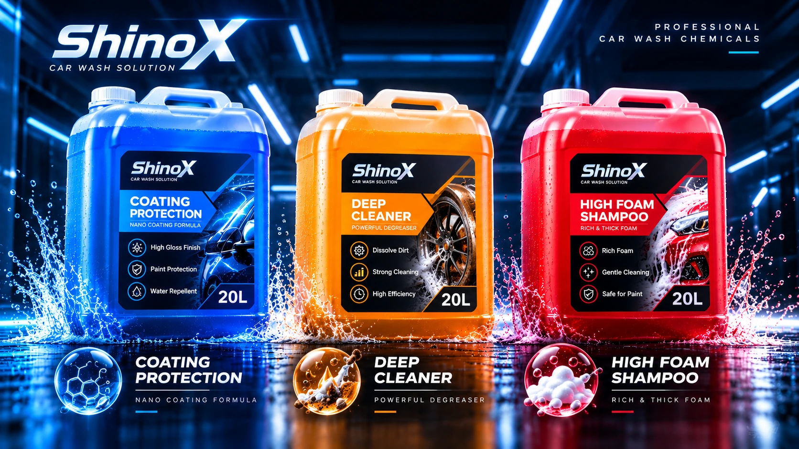

Nine-in-one wash control box
Discuss integration from cleaning operations to equipment layout.
View details ↗From multifunction self-service equipment and touchless automatic car wash machines to smart payments and supporting systems, ShinoX offers flexible equipment combinations to help owners select a configuration suited to their site size, investment budget and operating model.
Discuss integration from cleaning operations to equipment layout.
View details ↗

Official imagery, verified specifications and catalogs are in preparation. Fictional renders are not used here as actual model imagery.
SHINOX / PROFESSIONAL CAR WASH CHEMICALS

Coating Protection
20L
Enquire about this product ↗Deep Cleaner
20L
Enquire about this product ↗High Foam Shampoo
20L
Enquire about this product ↗LET’S BUILD WHAT’S NEXT
EQUIPMENT SELECTION GUIDE
A coin-operated self-service car wash typically needs wash bay controllers, payment systems and supporting equipment. An automatic car wash site requires a machine selected for the wash process, available space and vehicle flow. Explore the nine-in-one wash controller, B2 touchless automatic car wash machine and M9 360-degree car wash machine.
For site planning and equipment selection, see our car wash business solutions.